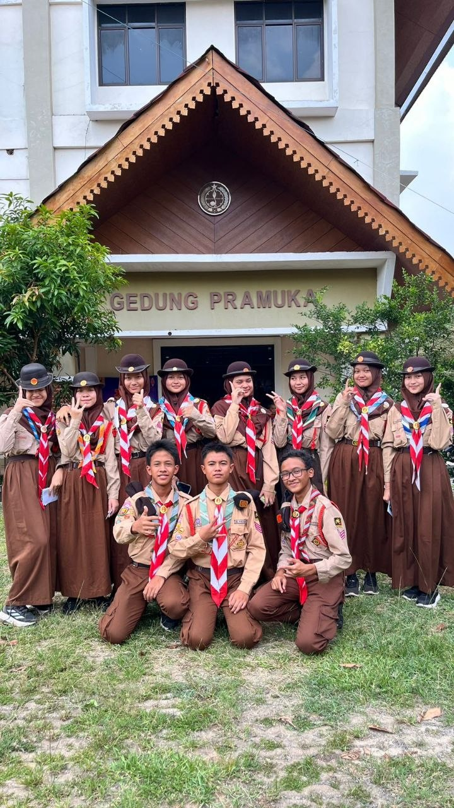
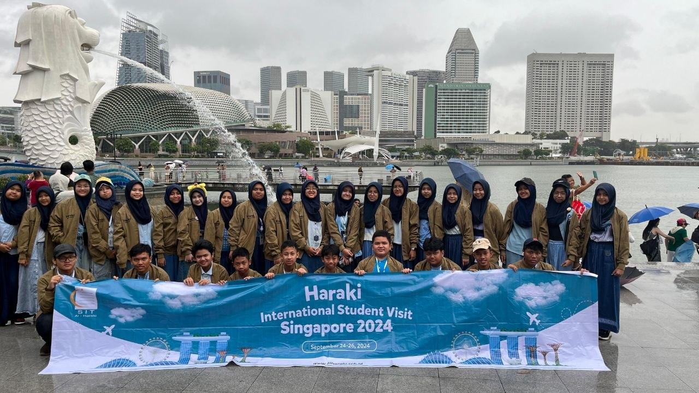
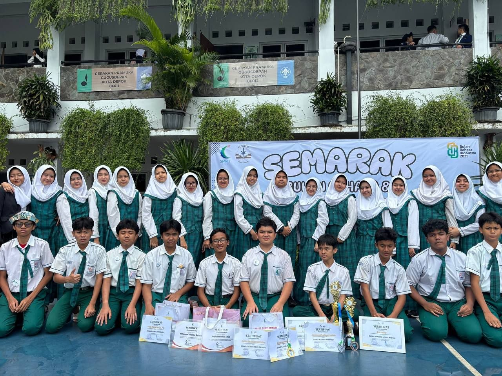
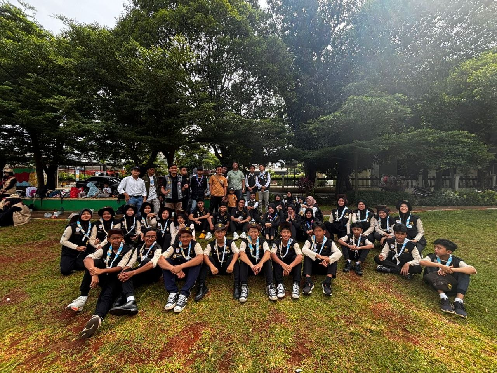
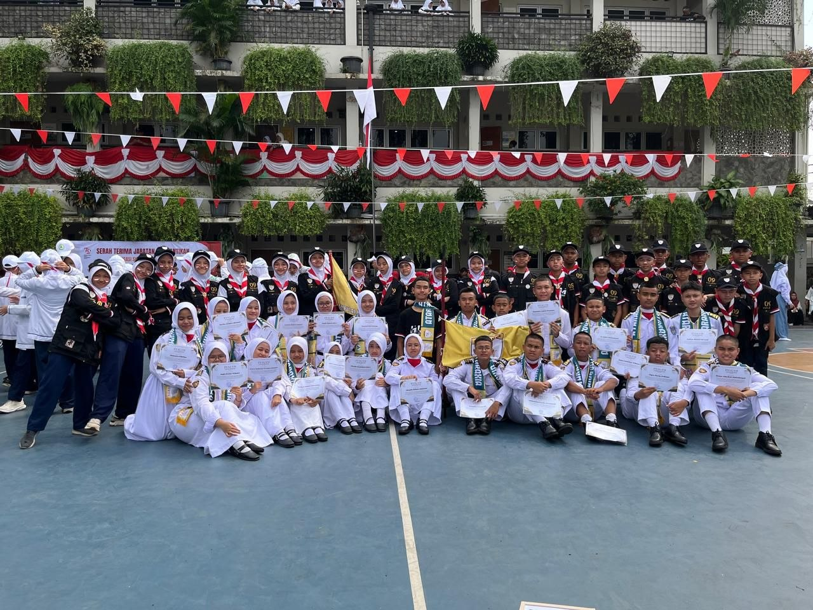

Passus! 📸

First Time In Singapore ✨

Al Araf Bulan Bahasa🏆

Togetherness 💖

Creative Day 🎨

Start Of a New Chapter 🏫
Potongan Cerita di Balik Setiap Perjalanan
Setiap foto punya cerita, setiap tawa punya makna. Galeri ini adalah kumpulan momen berharga yang saya kumpulkan selama masa sekolah, pengingat bahwa proses itu indah.

Passus! 📸

First Time In Singapore ✨

Al Araf Bulan Bahasa🏆

Togetherness 💖
Creative Day 🎨

Start Of a New Chapter 🏫